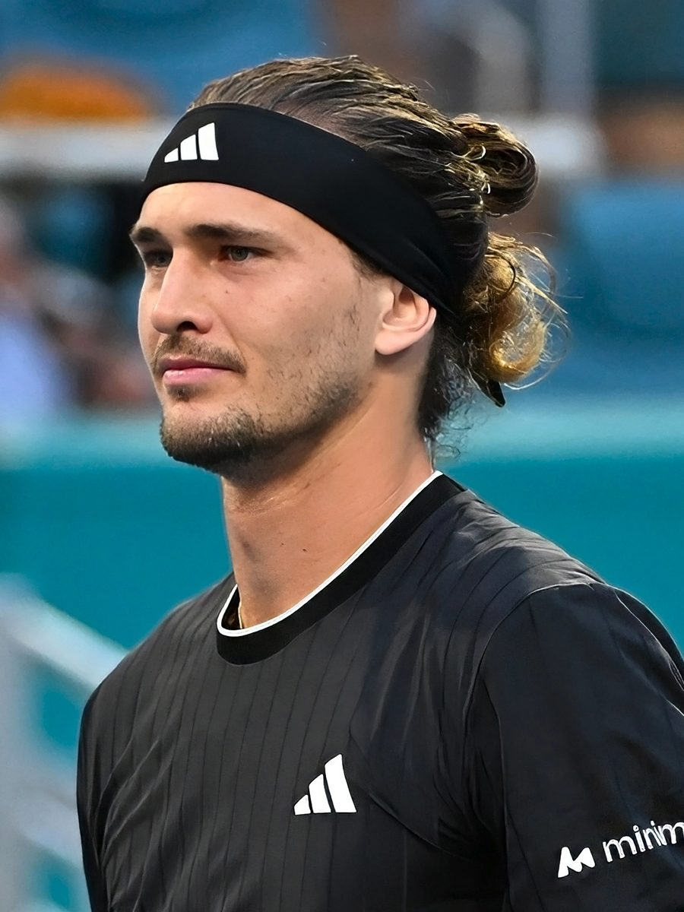

Jannik Sinner Withdrawn From 2027 Australian Open Following Right Knee Surgery
Tennis Australia confirms the two-time Melbourne champion will skip January's Grand Slam tournament to continue his recovery.

Two-time champion Jannik Sinner will miss the 2027 Australian Open while recovering from right knee surgery, tournament organisers confirmed on Thursday, 26 November 2026. The 25-year-old Italian, currently ranked world No. 2, had already shut down his 2026 campaign in October to treat inflammation before undergoing a procedure earlier this week.
Tennis Australia chief executive Andrew Abdo confirmed Sinner’s withdrawal from the opening Grand Slam tournament of the season, which begins on 17 January 2027 at Melbourne Park.
"We've been in regular touch with Jannik's team and they've confirmed he won't be joining us for the AO in January following his recent surgery," Abdo said in an official statement to The Associated Press. "Jannik loves competing here in Melbourne and is looking forward to returning for AO 2028. We wish him all the very best with his recovery and look forward to seeing him back on court soon."

Surgery Follows Prolonged Tour Absence
Sinner announced on Tuesday, 24 November, that he had undergone what he termed a "minor" operation on his right knee after it failed to heal through non-surgical treatments. The Italian has not competed on the ATP Tour since July 2026, when he defended his Wimbledon crown to claim his fifth career Grand Slam singles championship.
His management confirmed in October that Sinner would sit out the remainder of the 2026 schedule. The current layoff marks his second extended absence from tour competition in two seasons, following an agreed three-month suspension in 2025 settled with the World Anti-Doping Agency (WADA).
"I have to respect the protocols at the moment because if we rush things we could have more serious problems," Sinner stated during a news conference in Milan earlier in November. The prolonged hiatus cost him the world No. 1 ranking, which passed to Germany’s Alexander Zverev.

Melbourne Park Record and Australian Impact
Melbourne Park has provided the venue for many of Sinner’s career highlights. In 2024, he won his first Grand Slam title by beating Daniil Medvedev in five sets in the final. He retained the trophy in 2025 with victory over Zverev in the final, before losing in the 2026 semi-finals to Novak Djokovic.
Across seven visits to the Australian Open, Sinner has built a 27-5 match record, an 84 percent success rate. Zverev, who has replaced him at the top of the rankings, now heads to Melbourne as world No. 1.